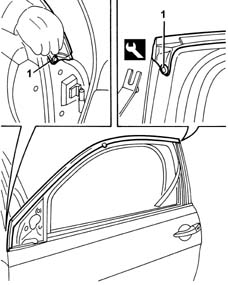

7005A50 side door seal against noise
- Path
- Procedures > 70 FITTINGS > 7005 PASSENGER COMPARTMENT FRONT SIDE DOORS > 7005A front side door assembly > 7005A50 side door seal against noise
- Kind
- repair procedure (removal / refitting; the operation number is the code)
- Applies to
- all engines; all production periods
- Interactive page
- https://sloeber94.github.io/elrnDB-lYpsln/en/#/2429482
Applies to: all engines; all production periods
 Removing
Removing
 Refitting
Refitting7005E50 front side door pillar trim (one) lh or rh - r r
7005E12 corner cover of one front side door, lh or rh r r
7005R30 electrically controlled door mirror (one) - r+r
7005R10 manually controlled door mirror (one) - r+r (alternatively)
1. Using the tool, remove the two retaining buttons.
 | Name | Country |
|---|---|---|
1 | Scraper blade | 1.878.077.000 |
2. Remove the seal.

Applies to: all engines; all production periods
Refitting
RemovingCheck that the seal is intact.
Place the seal in position and fasten it using the retaining buttons.
7005R10 manually controlled door mirror (one) - r+r (alternatively)
7005R30 electrically controlled door mirror (one) - r+r
Topics linked from this page (4)
- 7005E12 corner cover of one front side door, lh or rh r r
- 7005E50 front side door pillar trim (one) lh or rh - r r
- 7005R10 manually controlled door mirror (one) - r+r
- 7005R30 electrically controlled door mirror (one) - r+r